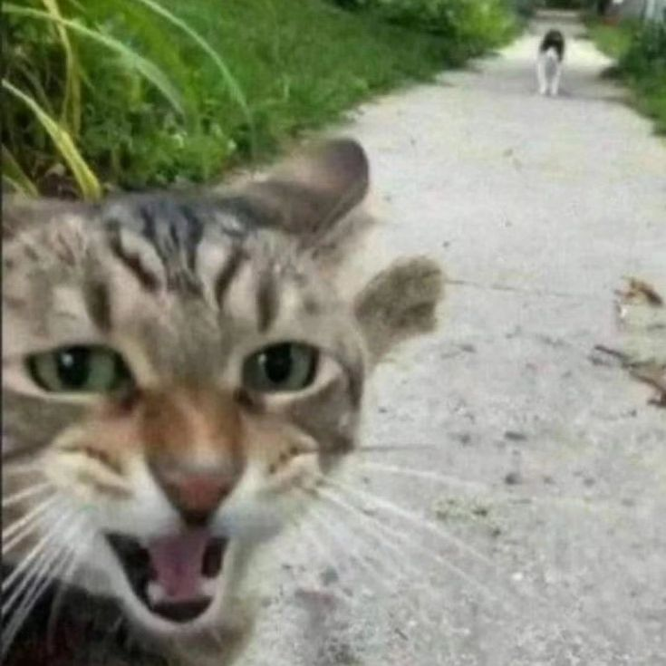

My projects
butterfly wingspan
Measurement of the butterflies width of their body and wingspan. I am using a software that's free to use named Mothra, I don't like it, and there's not many explanations of how to excactly use it either (anywhere.)
mechanical isopod
Currently on the process of doing it, planning on using it for beach cleanups. Since the UTP "congreso de tecnologia" offers to support and teach the members, i am a little relieved. I plan to sell the idea to a cleanup business near Santa Maria that's currently working on something similar near the lake, very excited!!
ABOUT ME
Im 20 and very unhealthy, I like Macross SDF and some other stuff. My favorite alcoholic drink is a Carajillo, and my favorite pastry is the Fraisier (Bruttito). I am always looking for recommendations for: movies, shows, comics/manga, or novels. Ohh, and I'm always open to talk, no matter who or what you are lol.
WRITE YOUR COMPLAINTS ABOUT ME!!
in process...
